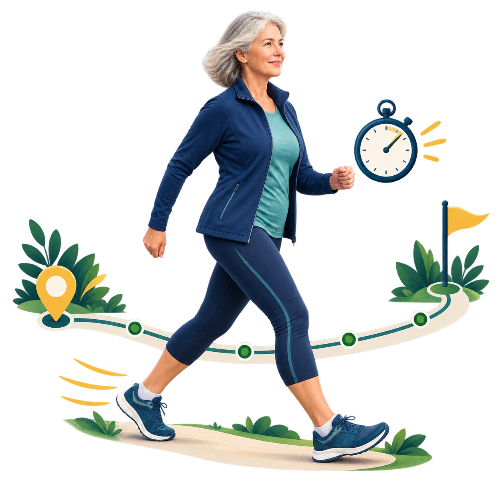

Oddech pozostaje swobodny.
Tempo marszu
Zmierz trasę.
Zmierz trasę.
Zobacz swój rytm.
Wpisz dystans i czas. Dostaniesz tempo na kilometr, prędkość oraz prostą odpowiedź, ile zajmie Ci przejście 1, 3 i 5 km.
DYSTANS+CZAS=TEMPO

Pomiar bez zgadywania
Jak zmierzyć jeden marsz?
Wybierz możliwie równą trasę. Przy kolejnych próbach użyj tego samego odcinka, żeby porównanie miało sens.
- 1Sprawdź dystans
Użyj oznaczonej pętli, mapy lub pomiaru GPS. Zapisz metry albo kilometry.
- 2Włącz stoper
Idź swoim zwykłym tempem. Nie przyspieszaj tylko dlatego, że wykonujesz pomiar.
- 3Sprawdź oddech
Na końcu oceń, czy możesz śpiewać, rozmawiać, czy powiedzieć tylko kilka słów.
Po obliczeniu
Zobaczysz rytm marszu
Tempo mówi, ile czasu zajmuje kilometr. Prędkość pokazuje, ile kilometrów pokonujesz w godzinę.
Twoje tempo
—min/km
Prędkość— km/h
1 km—
3 km—
5 km—
Twoje postępy
Ostatnie marsze
Im krótszy czas na kilometr, tym szybsze tempo.
Wykres pojawi się po zapisaniu pierwszego marszu.
Nie zapisano jeszcze żadnego marszu. Wyniki pozostają wyłącznie w pamięci tej przeglądarki.
| Data | Dystans | Tempo | Zmiana |
|---|
Tempo a wysiłek
Oddech mówi więcej niż sama liczba
Dwie osoby idące 5 km/h mogą odczuwać zupełnie inny wysiłek. Dlatego kalkulator nie przypisuje intensywności wyłącznie na podstawie prędkości.
To prosty test umiarkowanej intensywności opisany przez CDC.
Potrzebujesz przerwy na oddech.
Porównuj siebie ze sobą
Tempo zależy od trasy, pogody, nawierzchni i samopoczucia. Nowe niepokojące objawy podczas marszu są ważniejsze niż wynik kalkulatora — przerwij wysiłek i skorzystaj z odpowiedniej pomocy.